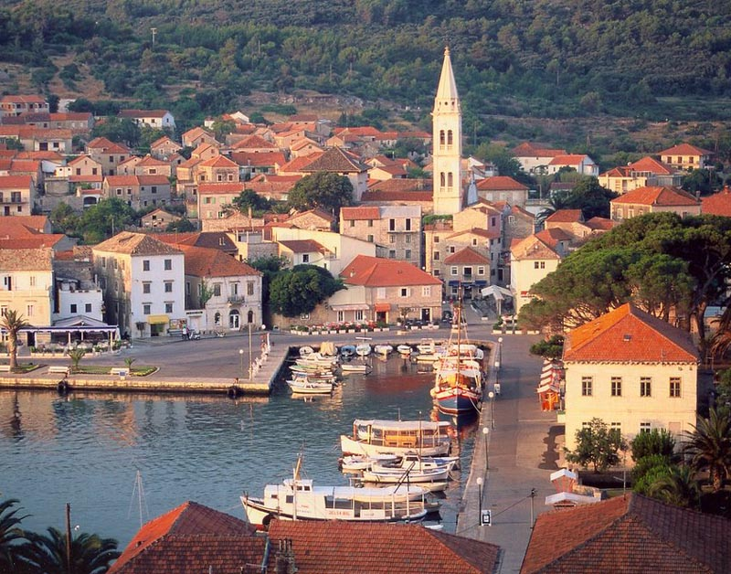

WirtualnyŚwiatPodróży.pl

Podróż do Chorwacji to podróż do krainy niezwykłych kontrastów, gdzie spotykają się bajeczne plaże Adriatyku, malownicze starówki i imponujące góry. Rozciągnięte na wybrzeżu miasta, takie jak Split i Dubrownik, urzekają nie tylko historycznymi zabytkami, ale także atmosferą nadmorskiego życia.
Powrót do strony głównej